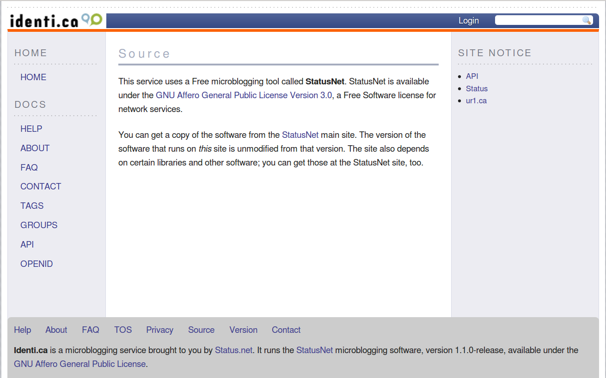

也紀念我們永遠的朋友 李士傑先生（Shih-Chieh Ilya Li）。
因應網路時代與雲端應用而生的 AGPL-3.0 授權條款
GNU Affero General Public License 3.0 (AGPL-3.0) 是自由軟體基金會於 2007 年 11 月 19 日所發佈的一份自由開源軟體授權條款（註一）。這份授權條款與 GPL-3.0 為孿生條款，因為這兩份條款僅在第 13 條有所不同，其餘的規定則一模一樣。但這第 13 條的不同差異處，就讓 AGPL-3.0 與 GPL-3.0 的拘束特性有著很大的分別，這也讓許多提供網路服務的公司對於這份條款避之唯恐不及。但 AGPL-3.0 在使用上真的如此令人恐懼？其中的條款內容究竟如何？在利用自由開源軟體元件的同時，又應該以什麼樣的態度與立場來面對 AGPL-3.0？本文將會針對這些問題一一說明 。
如本文一開始所述，AGPL-3.0 與 GPL-3.0 僅第 13 條的內容不同，而 AGPL-3.0 這一條的內容若是用白話來解釋，大意是：若透過網路連結的服務方式，讓使用者可以利用 AGPL-3.0 衍生程式的服務，即便這位使用者並沒有真的取得或擁有 AGPL-3.0 衍生程式的程式碼，此時網路服務的提供者，仍然要讓這位使用者可以取得這個 AGPL-3.0 衍生程式的源碼。這樣的網路服務提供者在早期一般簡稱為 ASP (Application Service Provider)，對照到現在通行的用詞，這些 ASP 業者就是提供 SaaS (Software as a Service) 的業者，像 Google Search、Google Map、Gmail 等都屬於這樣的網路服務，Google 的各項服務可說就是 ASP 服務型態的典型。從撰寫理由來看，AGPL 之所以特別規定 ASP 業者必須提供程式源碼給網路使用者，是因為在還沒有 AGPL 這樣的授權條款之前，許多 ASP 業者利用 GPL 授權元件來架構網路應用程式，而依照 GPL 的規定，這些應用程式因為並沒有被散佈到 ASP 業者以外之處，也就是網路服務的使用者並沒有取得這些應用程式，僅透過網路來利用程式的功能，所以網路使用者並沒有權利依 GPL 授權條款，向 ASP 業者索取這些應用程式裡 GPL 元件的程式源碼（註二）。一些自由開源軟體理念者認為，這樣的現象是因為 GPL 規定有漏洞所造成，因此推動修改 GPL 授權條款的內容。在自由軟體基金會 (Free Software Foundation, FSF) 的同意下，透過在 GPL-2.0 第 2 條第 1 項的後面加上第 d) 款，AGPL-1.0 就這樣誕生了。因此雖然 GPL-2.0 與 AGPL-1.0 這兩份條款的版本差一個號次，但其實也可以算是內容近乎完全一致的孿生條款（註三）。
其後，自由軟體基金會在草擬 GPL-3.0 的同時，也草擬、制訂出了最新一版的 AGPL-3.0，從此 GPL-3.0 與 AGPL-3.0 的內容與版本號次開始一致。而在一版與三版中間，有一個僅具象徵性意義的過渡版本 AGPL-2.0，其中簡短的內容主要是表達：若一個程式採用 AGPL-1.0 及其後版本授權的話，程式使用者可以根據 AGPL-2.0 的規定，自由決定是否要採用 AGPL-3.0 來授權這個程式（註四）。
從歷史背景可以瞭解到，AGPL 這一個系列授權條款共有三個版本，這三個版本都是在 GPL 的基礎上，著力處理 ASP 業者的利用行為，因此 AGPL 具有 GPL 的所有特性，這其中當然也蘊含了實踐四大自由的理念（註五），以及對於衍生程式的授權拘束性在內。不過由於文章篇幅有限，本文僅針對最新版的 AGPL-3.0 加以介紹，同時將焦點集中在第 13 條，其餘與 GPL-3.0 相同的內容，還請讀者另行參考 GPL 相關的文章。
依據 AGPL-3.0 第 13 條的規定，若是程式被修改並產生衍生程式的話，任何與這個衍生程式透過電腦網路來互動的網路使用者，都必須要有機會可以透過網路來近用 (access) 這個 AGPL-3.0 衍生程式的程式源碼，也就是說，將衍生程式放置到網路上，供網路使用者利用之人，有義務要提供衍生程式使用者取得程式源碼的機會。以 AGPL-3.0 授權的 SatusNet 微網誌為例（註六），若甲公司下載 StatusNet 的程式源碼，修改之後重新命名為 CrossChat，並將 CrossChat 上線，依此衍生程式提供網路使用者微網誌服務，此時甲公司就必須遵守 AGPL-3.0 的規則，讓 CrossChat 使用者可以透過網路取得 CrossChat 的程式源碼。因此可以知道，啟動 AGPL-3.0 第 13 條規定的關鍵在於「修改」與「網路服務」，若甲公司並沒有修改 StatusNet，而是整包拿來、改換名稱與 logo ，之後讓其他元件透過此 AGPL-3.0 原始程式的互動介面 (Application programming interface, API)，直接上線提供服務的話，此時甲就沒有提供 AGPL-3.0 原始程式源碼的義務（註七）。
在這樣的基本規定之上，還有幾點必須要注意：
- 由於 AGPL-3.0 衍生程式是透過網路與服務使用者互動，最簡便提供程式源碼的方式，就是利用網路傳輸來進行提供，所以 AGPL-3.0 規定網路服務提供者必須將衍生程式的程式源碼儲放在網路伺服器上，然後提供服務使用者近用這些儲放設備的管道，讓其可以因此取得程式源碼 (... providing access to the Corresponding Source from a network server....)；
- 為了避免服務提供者利用過於複雜或者困難的技術，來阻礙使用者下載程式源碼，間接影響程式源碼的自由散佈，因此 AGPL-3.0 規定網路服務提供者必須利用標準或一般常見的方式，來幫助、便利使用者下載程式源碼 (... through some standard or customary means of facilitating copying of software....)；
- 由於網路服務提供者本身已經是透過網路來提供服務，額外提供程式源碼的成本幾乎等同於零，所以 AGPL-3.0 規定透過網路傳輸來提供程式源碼的行為必須是免費的。
接續上述的例子，來進一步說明：甲公司可以在 CrossChat 的網站上，單獨開立上一個名為 "Source Code" 的頁面，在該頁面中說明 CrossChat 的授權方式，同時提供下載程式源碼的連結，如此就可以滿足 AGPL-3.0 要求免費提供衍生程式源碼的基本義務規定。當然，甲公司也可以採用其他方式，例如服務使用者在完成 CrossChat 的註冊程序之後，會收到一封註冊完成通知信，甲公司可以在通知信中附上 CrossChat 原始碼的下載網址，讓使用者透過直接點選連結就可以下載到原始碼。總之，透過近用網路伺服器的管道來便利使用者取得原始碼，在技術上與方法上都可以有許多的變化，只要符合上述 AGPL-3.0 規定與取得便利的基本精神，就是可行的方式。

▲ 圖1：identi.ca 是利用 StatusNet 所架設的微網誌網站，這個網站透過 "Source" 獨立頁面說明網站系統源碼的來源、授權條款，與下載程式源碼的管道。
AGPL-3.0 與 GPL-3.0 一樣，都是為了實踐四大自由而制定的授權條款，也因此這兩份條款對於衍生程式都具有較嚴謹的授權拘束性（註八），這樣的特性如果發揮到極致，會讓 AGPL-3.0 與 GPL-3.0 這兩份孿生條款彼此排斥，所以為了讓 AGPL-3.0 元件與 GPL-3.0 元件可以結合併存在同一個程式當中，兩份條款分別在其第 13 條的地方一同設立了例外規定：那就是，各自的授權條款僅拘束原本各自的元件，而不會擴及拘束到另一方的授權元件，也就是 AGPL-3.0 授權的元件，維持 AGPL-3.0 的授權，而 GPL-3.0 授權的元件，一樣維持 GPL-3.0 授權，彼此的授權狀態互不干擾，然而，當整體衍生程式成為網路服務程式的話，GPL-3.0 授權的元件，則必須一併適用 AGPL-3.0 第 13 條的進階規定，也就是說，此時 GPL-3.0 元件的程式源碼也必須一併提供給使用者，以不弱化 AGPL-3.0 設定網路服務就要啟動程式源碼提供義務的規定。如此一來，兩份條款彼此有了例外並存的依據，亦可以增進元件的結合與應用，同時也維持了 AGPL-3.0 規範 ASP 業者必須提供程式源碼的初衷。
而對於開源界來說，正因為 AGPL-3.0 著眼於網路使用方面的規則，特別針對網路服務行為規定有提供程式源碼的義務，所以一些自由開源專案反而特別偏好採用 AGPL-3.0 來授權，如此未來專案程式被網路服務提供者透過網路加以應用的時候，就可以要求服務提供者必須提供衍生程式的程式源碼。這樣的專案除了前述的 StatusNet 之外，企業資源管理系統 OpenERP、人際關係管理系統 SugarCRM、圖形資料庫系統 Neo4j，以及軟體專案開發管理平台 Launchpad 等著名的自由開源軟體專案（註九），都是採用 AGPL-3.0 來授權。
在經過上述的簡要介紹之後，讓我們重新審視本文一開始羅列的諸多疑問：AGPL-3.0 在使用上真的如此令人恐懼？一般使用者與商業使用者，又該以什麼樣的態度與立場來面對 AGPL-3.0？
其實，從應用面來看，AGPL-3.0 的授權拘束性並非會被無限制擴張的，只要使用者能謹守不直接修改原程式這個重要判斷準則，因為 AGPL-3.0 的規則，並非要所有運用 AGPL-3.0 程式進行網路服務的專案，都必須將自己撰寫的所有程式源碼提供出來，其要求程式源碼的範圍，還是強調在原程式已被修改的部份，以及該部份與直接對應元件結合成為衍生作品時的程式源碼。不過，不可諱言的是，也因為 AGPL-3.0 這樣的義務規定，間接擴張了 AGPL-3.0 授權拘束性的影響力，一些無法或不願意將程式源碼提供出來，或對此規則有疑慮的公司，理所當然便會採取避用 AGPL-3.0 授權元件的策略，以保守其網路應用程式在技術方法上的隱密性。然而在這樣的情況下，部份 AGPL-3.0 授權的專案，也已開始套用過往在 GPL 授權專案上常見的雙重授權商業模式（註十）：這些專案一方面透過 AGPL-3.0 釋出程式源碼，獲得與社群開發者協同開發與除錯的優勢，另外一方面也提供封閉源碼的商業授權條款，讓想要另外客製化應用、卻又無法提供所有衍生程式源碼的公司與個人，有另外一個選擇的管道。前述的 OpenERP 與 SugarCRM，便皆是採用此種雙重授權策略的範例專案。所以客觀來說，AGPL-3.0 基於 GPL-3.0 發展的授權拘束性，雖然確有擴張，但卻並不是無法控管。許多網路傳聞，單單一句話說「使用 AGPL-3.0 授權元件進行網路服務，便得提供自身繫統的所有程式源碼。」那也是太簡略而不清楚明瞭的誤解。只要使用端有正確的使用觀念，對於 AGPL-3.0 元件的應用，能遵守其授權拘束性開啟的分際，或是事先詢求權利人的另外授權，那麼是毋需過度擔心與恐懼的。
註一：AGPL-3.0 授權條款全文請見：https://www.gnu.org/licenses/agpl-3.0.html。
註二：關於 ASP 業者利用自由開源軟體的相關討論，請見：葛冬梅，ASP 與自由／開放源碼軟體的散佈條款，https://www.openfoundry.org/tw/legal-column-list/494-asp-。
註三：AGPL-1.0 內容請見：https://www.affero.org/oagpl.html。在前言之前，有一小段文字，清楚說明 AGPL-1.0 是修改自 GPL-2.0。
註四：AGPL-2.0 的內容請見：https://www.affero.org/agpl2.html。
註五：關於四大自由的內容以及與 GPL 條款的關係，請參見：葛冬梅，讓人既愛又頭痛的 GNU GPL，https://www.openfoundry.org/tw/legal-column-list/525。
註六：精確來說，StatusNet 是採用「AGPL-3.0 及其後版本」來授權。StatusNet 官網：https://status.net/；StatusNet 開發專案網頁：https://gitorious.org/projects/statusnet。
註七：不過甲公司仍然可以自行提供 StatuNet 的程式源碼，這樣的作法可以協助自由開源軟體的散佈，進而促進開發軟體專案的名聲，並與開發社群建立良好關係，促進整體自由開源軟體生態的正向循環。
註八：關於 GPL 授權拘束性的說明與相關議題，請參見：林誠夏，GPL 條款對於衍生程式的判定標準與其授權拘束性的擴散範圍（上），https://www.openfoundry.org/tw/legal-column-list/8446；林誠夏，GPL 條款對於衍生程式的判定標準與其授權拘束性的擴散範圍（下），https://www.openfoundry.org/tw/legal-column-list/8447。
註九：此段所提到的軟體進一步資訊如下：OpenERP 網站，https://www.openerp.com/；SugarCRM 網站，https://www.sugarcrm.com/；Neo4j ，https://neo4j.org/；Launchpad 為 Canonical 公司所開發，該公司即為 Ubuntu 作業系統背後的支持公司，Canonical 開發了 Launchpad 用於自由開源軟體的開發與管理，同時也在 Launchpad 上面持續維護與開發 Launchpad，https://launchpad.net/launchpad-project。
註十：關於自由開源軟體雙重授權策略的應用，請參考：林誠夏，自由軟體的商業應用模式（下）－雙重授權篇，https://www.openfoundry.org/tw/legal-column-list/1056。
自由軟體鑄造場電子報 : 第 204 期 Simile Widget Timeline - 用靜態網頁表現時間線
標籤: AGPL, ASP, copyleft, dual-licensing, 授權拘束性,
分類: 法律專欄
專欄總覽


E-Mail：contact@openfoundry.org Address：台北市南港區研究院路2段128號 中央研究院資訊科學研究所 . 隱私權條款. 使用條款